# import all python add-ons etc that will be needed later on
%matplotlib inline
import numpy as np
import matplotlib.pyplot as plt
from sympy import *
from scipy.integrate import quad,odeint,solve_ivp
from scipy import linalg
#from scipy.optimize import fsolve
from scipy.special import gamma, factorial,binom
from scipy import special
init_printing() # allows printing of SymPy results in typeset maths format
plt.rcParams.update({'font.size': 16}) # set font size for plots
#Algorithm 1 Al-Kashi's method of calculating pi
import numpy as np # import numerical library
m = 20 # number of iterations
xa = np.sqrt(3.0) # initial guess for x
na = 6.0 # number of sided on polygon
print( 0,'first guess',3*np.sqrt(4 - xa**2 ) )
for i in range(m):
xb = np.sqrt( 2 + xa )
nb = 2.0*na
ab = nb/2.0*np.sqrt(4 - xb**2 )
print( i+1, ab)
xa = xb
na = nb
pass # end loop
0 first guess 3.000000000000001
1 3.105828541230247
2 3.132628613281242
3 3.139350203046893
4 3.1410319508903672
5 3.1414524722853443
6 3.141557607912925
7 3.1415838921593586
8 3.1415904632784506
9 3.1415921058762954
10 3.141592515921144
11 3.1415926186407894
12 3.1415926346490446
13 3.1415926453212157
14 3.1415926453212157
15 3.1415923038117377
16 3.1415923038117377
17 3.1415868396550413
18 3.1415868396550413
19 3.1416742650217575
20 3.1416742650217575
from mpmath import mp
#Algorithm 1 Al-Kashi's method of calculating pi
import numpy as np # import numerical library
mp.dps = 50
m = 20 # number of iterations
xa=np.sqrt(3)
na=6
print( 0,'first guess',mp.mpf(3)*mp.sqrt(mp.mpf(4.0) - xa**2 ) )
for i in range(m):
xb= mp.sqrt( mp.mpf(2.0) + xa )
nb= mp.mpf(2.0)*na
ab= nb/mp.mpf(2.0)*mp.sqrt(mp.mpf( 4.0) - xb**2 )
print( i+1, ab )
xa=xb
na=nb
pass # end loop
0 first guess 3.0000000000000006661338147750938502984691363846519
1 3.1058285412302497297756071812419811340394193153356
2 3.1326286132812387941157105793230870754182859897424
3 3.1393502030468678079510469920644855763779667817991
4 3.1410319508905102398940316487889106975402342489781
5 3.1414524722854626774750635762760539908327838066077
6 3.1415576079118582476013665560967339860128793384829
7 3.141583892148319010768985366699999982087370505468
8 3.1415904632280506978422524266691500002373529700091
9 3.1415921059992721526495151020229286653267888214136
10 3.141592516692158049697848681427469964683451802745
11 3.1415926193653845572945829425402371312064439908352
12 3.1415926450336914987771898978485279682618115326466
13 3.1415926514507682538093057190351202838132497589876
14 3.1415926530550374437961761813617795701526922694
15 3.1415926534561047413696963911622347989807994888972
16 3.1415926535563715657678766057514826114339777691891
17 3.141592653581438271867721669532497621200282487095
18 3.1415926535877049483927016861111079268910361494522
19 3.1415926535892716175239478621703452896459798939211
20 3.1415926535896632848067594794298161795037602999733
np.pi
# Algorithm 2 Heron's or Babylonian method to find a square root.
N = 231001 # find sqrt of N
a0= 1/2 # initial guess
m = 20 # number oif iterations
print('square root of ', N, 'initial guess', a0)
aa = a0 + (N - a0**2)/(2*a0) # initial iteration eqn 6
print( 0, aa ) # print 1st value
for i in range(m-1): # do iteration
ab = aa +( N - aa**2 )/( 2*aa ) # equation 6
print( i+1, ab)
aa = ab # replace new value with old
pass
square root of 231001 initial guess 0.5
0 231001.25
1 115501.12499945887
2 57751.56249431824
3 28877.781201706002
4 14442.890232929762
5 7229.442165402957
6 3630.697488260504
7 1847.1609511162262
8 986.1091360574616
9 610.182070225678
10 494.3796190223625
11 480.8169566585549
12 480.62567200454333
13 480.62563393976546
14 480.625633939764
15 480.625633939764
16 480.625633939764
17 480.625633939764
18 480.625633939764
19 480.625633939764
np.sqrt(231001)
from mpl_toolkits.mplot3d import Axes3D
from matplotlib import cm
from scipy.spatial import Delaunay
plt.rcParams.update({'font.size': 16}) # set font size for plots
fig=plt.figure(figsize=(8,8))
def Icosahedron(): # coords from golden rectangle with 2 height 2g
h = 0.5*(1+np.sqrt(5))
p1 = np.array([[0,1,h],[0,1,-h],[0,-1,h],[0,-1,-h]])
p2 = p1[:,[1,2,0]] # rotate 1 left
p3 = p1[:,[2,0,1]]
print(p1)
print(p2)
print(p3)
return np.vstack((p1,p2,p3))
Ico = Icosahedron()
CH = Delaunay(Ico).convex_hull
x,y,z = Ico[:,0], Ico[:,1], Ico[:,2]
ax = fig.add_subplot(111, projection='3d')
S = ax.plot_trisurf(x,y,z,triangles = CH ,shade = False, cmap=cm.jet,alpha=1)
ax.view_init(11, 120)
ax.set_xticklabels([])
ax.set_yticklabels([])
ax.set_zticklabels([])
ax.axis('off')
plt.tight_layout()
#plt.savefig('chapter1-fig6.png')
plt.show()
[[ 0. 1. 1.61803399]
[ 0. 1. -1.61803399]
[ 0. -1. 1.61803399]
[ 0. -1. -1.61803399]]
[[ 1. 1.61803399 0. ]
[ 1. -1.61803399 0. ]
[-1. 1.61803399 0. ]
[-1. -1.61803399 0. ]]
[[ 1.61803399 0. 1. ]
[-1.61803399 0. 1. ]
[ 1.61803399 0. -1. ]
[-1.61803399 0. -1. ]]
# Algorithm 3 Golden Search
f= lambda x: x**3 - 5*x**2 # define a functio
a = 1.0 # set limits a and b
b = 6.0
N = 20 # number of iterations
Lmt= 0.01 # smallest b-a allowed
g = (np.sqrt(5.0)-1.0)/2.0 # golden ratio
ka = g*a+(1-g)*b # define start points
kb = g*b+(1-g)*a
fa = f(ka) # function at start pos’ns
fb = f(kb)
print(fa,fb)
print(' i ka kb fa fb b-a')
i= 0
while abs(b-a)> Lmt and i < N-1 :
i = i+1
if fa < fb : # rule(i)
b = kb
kb= ka
fb= fa
ka= g*a+(1-g)*b
fa= f(ka)
else: # rule(ii)
a = ka
ka= kb
fa= fb
kb= g*b+(1-g)*a
fb= f(kb)
print('{:4d} {:6.3f} {:6.3f} {:6.3f} {:6.3f} {:6.3f}'.format( i, ka, kb, fa, fb, b-a ) )
pass # end while
print(f(2))
-17.6977008311643 -15.22099298127786
i ka kb fa fb b-a
1 2.180 2.910 -13.404 -17.698 3.090
2 2.910 3.361 -17.698 -18.515 1.910
3 3.361 3.639 -18.515 -18.022 1.180
4 3.188 3.361 -18.417 -18.515 0.729
5 3.361 3.467 -18.515 -18.427 0.451
6 3.295 3.361 -18.511 -18.515 0.279
7 3.361 3.401 -18.515 -18.495 0.172
8 3.336 3.361 -18.518 -18.515 0.106
9 3.320 3.336 -18.518 -18.518 0.066
10 3.336 3.345 -18.518 -18.518 0.041
11 3.330 3.336 -18.518 -18.518 0.025
12 3.336 3.339 -18.518 -18.518 0.016
13 3.333 3.336 -18.519 -18.518 0.010
-12
# Algorithm 4 Series calculation of an exponetial exp(x).
p = 1.0
s = 1.0
x = 2.0 # exponetial value to calculate
for i in range(1,20):
p = p*x/i
s = s + p
print(i,s)
pass
1 3.0
2 5.0
3 6.333333333333333
4 7.0
5 7.266666666666667
6 7.355555555555555
7 7.3809523809523805
8 7.387301587301587
9 7.3887125220458545
10 7.388994708994708
11 7.389046015712681
12 7.3890545668323435
13 7.389055882389215
14 7.3890560703259105
15 7.389056095384136
16 7.389056098516415
17 7.389056098884918
18 7.389056098925863
19 7.3890560989301735
np.exp(2)
plt.rcParams.update({'font.size': 16}) # set font size for plots
fig=plt.figure(figsize=(6,6))
x=np.linspace(-5,5,200)
xx=np.linspace(1e-6,5,200)
plt.plot(x,x,color='grey',linestyle='dashed')
plt.plot(x,np.exp(x),color='blue')
plt.plot(x,np.exp(-x),color='red')
plt.plot(xx,np.log(xx),color='blue')
#plt.plot(x,np.log(np.abs(x)),color='blue')
plt.xlim([-5,5])
plt.ylim([-5,5])
plt.axhline(0,linewidth=1,color='grey')
plt.axvline(0,linewidth=1,color='grey')
plt.xlabel('x')
plt.ylabel('y')
plt.annotate(r'$e^x$',xy=(1.2,np.exp(1)))
plt.annotate(r'$e^{-x}$',xy=(-2.2,np.exp(1)))
plt.annotate(r'$\ln(x)$',xy=(2.5,np.log(4)))
#plt.savefig('chapter1-fig8.png')
plt.show()
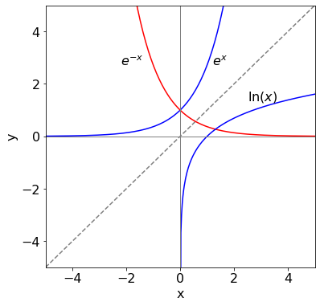
plt.rcParams.update({'font.size': 16}) # set font size for plots
fig=plt.figure(figsize=(6,4))
x=np.linspace(-5,5,400)
plt.plot(x,np.sin(2*np.pi*x),color='blue')
plt.plot(x,np.sin(2*np.pi*x+2/3),color='blue',linestyle='dashed')
plt.xlim([-2,2])
plt.ylim([-1,1])
plt.axhline(0,linewidth=1,color='grey')
plt.axvline(0,linewidth=1,color='grey')
plt.xlabel(r'$x$')
plt.ylabel(r'$y$')
adict=dict(facecolor='black', shrink=0.01,width=1,headwidth=3)
plt.annotate(r'$\phi=0$', xy=(0.35,np.sin(2*np.pi*0.35)), xytext=(0.6, 0.9),
arrowprops = adict,fontsize=10 )
plt.annotate(r'$\phi=2/3$', xy=(1.45,np.sin(2*np.pi*1.45 +2/3)), xytext=(0.85, -0.9),
arrowprops = adict,fontsize=10 )
plt.tight_layout()
#plt.savefig('chapter1-fig12.png')
plt.show()
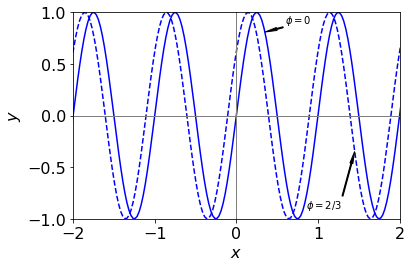
plt.rcParams.update({'font.size': 16}) # set font size for plots
fig1=plt.figure(figsize=(13,5))
ax0 = fig1.add_subplot(1,2,1)
ax1 = fig1.add_subplot(1,2,2)
v1=5
v2=5.5
x=np.linspace(0,1.0,1000)
ax0.plot(x,np.sin(2*np.pi*x*v1),color='blue')
ax0.plot(x,np.sin(2*np.pi*x*v2),color='blue',linestyle='dashed')
ax0.set_xlim([0,1])
ax0.set_ylim([-2,2])
ax0.axhline(0,linewidth=1,color='grey')
ax0.axvline(0,linewidth=1,color='grey')
ax0.set_xlabel('time')
x=np.linspace(0,10,1000)
ax1.plot(x,np.sin(2*np.pi*x*v1) + np.sin(2*np.pi*x*v2),color='blue')
#ax1.plot(x,2*np.sin(2*np.pi*x*0.5/2 - np.pi/2),color='red',linestyle='dashed')
#ax1.plot(x, 2*np.sin(2*np.pi*(v1+v2)*x/2)*np.cos(2*np.pi*(v1-v2)*x/2),color='red' )
ax1.plot(x, 2*np.cos(2*np.pi*(v1-v2)*x/2),color='red',linestyle='dashed' )
ax1.set_xlabel('time')
ax1.set_xlim([0,5])
ax1.set_ylim([-2,2])
ax0.set_yticks([-2,-1,0,1,2])
ax1.set_yticks([-2,-1,0,1,2])
plt.tight_layout()
#plt.savefig('chapter1-fig13.png')
plt.show()
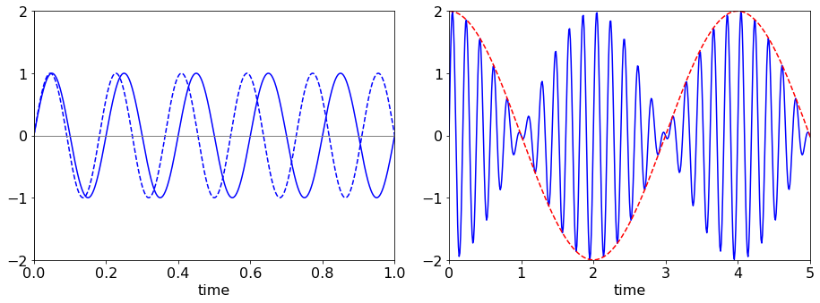
plt.rcParams.update({'font.size': 16}) # set font size for plots
fig1=plt.figure(figsize=(6,6))
t=np.linspace(-2,2,500)
fx=lambda x: np.cosh(x)
fy=lambda x: np.sinh(x)
plt.plot(fx(t),fy(t),color='blue')
plt.plot(fx(t),-fy(t),color='blue')
plt.plot(-fx(t),fy(t),color='blue')
plt.plot(-fx(t),-fy(t),color='blue')
plt.scatter(fx(np.pi/4),fy(np.pi/4),color='red',zorder=10)
plt.plot(-np.cos(t),np.sin(t),color='blue')
plt.plot(np.cos(t),-np.sin(t),color='blue')
plt.scatter(np.cos(np.pi/4),np.sin(np.pi/4),s=50,color='red',zorder=10)
plt.xlim([-2,2])
plt.ylim([-2,2])
plt.axhline(0,color='grey',linewidth=1)
plt.axvline(0,color='grey',linewidth=1)
plt.xlabel('x')
plt.ylabel('y')
#plt.annotate(r'$(\cos(\theta),\sin(\theta))$', xy=(0.3,1),fontsize=12)
plt.annotate(r'$(\cos(\theta),\sin(\theta)$', xy=(np.cos(np.pi/4),np.sin(np.pi/4)), xytext=(0.05, 1.2),
arrowprops = dict(facecolor='black', shrink=0.01,width=1,headwidth=3),fontsize=12 )
plt.annotate(r'$(\cosh(\theta),\sinh(\theta)$', xy=(np.cosh(np.pi/4),np.sinh(np.pi/4)), xytext=(0.5, 1.75),
arrowprops = dict(facecolor='black', shrink=0.01,width=1,headwidth=3) ,fontsize=12)
plt.tight_layout()
#plt.savefig('chapter1-fig14.png')
plt.show()
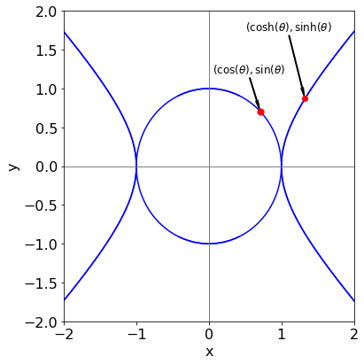
plt.rcParams.update({'font.size': 16}) # set font size for plots
fig1=plt.figure(figsize=(13,6))
ax0 = fig1.add_subplot(1,2,1)
ax1 = fig1.add_subplot(1,2,2)
x=np.linspace(-10,10,1000)
ax0.plot(x,np.cosh(x),color='blue')
ax0.plot(x,np.sinh(x),color='red')
ax0.plot(x,np.tanh(x),color='grey',linestyle='dashed')
ax0.set_xlim([-4,4])
ax0.set_ylim([-4,4])
ax0.axhline(0,linewidth=1,color='grey')
ax0.axvline(0,linewidth=1,color='grey')
ax0.set_xlabel('x')
ax0.annotate(r'$\sinh(x)$',xy=(-1.5,-3))
ax0.annotate(r'$\cosh(x)$',xy=(-2.25,1.1))
ax0.annotate(r'$\tanh(x)$',xy=(-3.4,-1.5))
ax1.plot(x,np.sin(x),color='blue')
ax1.plot(x,np.cos(x),color='red')
ax1.plot(x,np.tan(x),color='grey',linestyle='dashed')
ax1.set_xlabel('x')
ax1.axhline(0,linewidth=1,color='grey')
ax1.axvline(0,linewidth=1,color='grey')
ax1.set_xlim([-4,4])
ax1.set_ylim([-4,4])
ax1.annotate(r'$\sin(x)$',xy=(2,1))
ax1.annotate(r'$\cos(x)$',xy=(-1.25,1.1))
ax1.annotate(r'$\tan(x)$',xy=(-3.4,2))
plt.tight_layout()
#plt.savefig('chapter1-fig15.png')
plt.show()
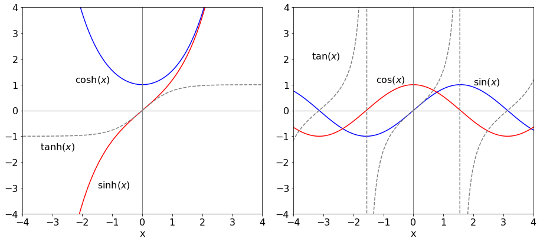
plt.rcParams.update({'font.size': 16}) # set font size for plots
fig1=plt.figure(figsize=(13,6))
ax0 = fig1.add_subplot(1,3,1)
ax1 = fig1.add_subplot(1,3,2)
ax2 = fig1.add_subplot(1,3,3)
x=np.linspace(-2*np.pi,2*np.pi,1000)
ax0.plot(np.sin(x),x/np.pi,color='blue')
ax1.plot(np.cos(x),x/np.pi,color='red')
ax2.plot(np.tan(x),x/np.pi,color='grey')
ax0.set_xlim([-2,2])
ax0.set_ylim([-2,2])
ax1.set_xlim([-2,2])
ax1.set_ylim([-2,2])
ax2.set_xlim([-2,2])
ax2.set_ylim([-2,2])
ax0.axhline(0,linewidth=1,color='grey')
ax0.axvline(0,linewidth=1,color='grey')
ax0.set_xlabel('x')
ax1.set_xlabel('x')
ax2.set_xlabel('x')
ax0.set_ylabel(r'$y/\pi$')
ax1.set_ylabel(r'$y/\pi$')
ax2.set_ylabel(r'$y/\pi$')
ax1.axhline(0,linewidth=1,color='grey')
ax1.axvline(0,linewidth=1,color='grey')
ax0.annotate(r'$\sin^{-1}(x)$',xy=(-1.7,1))
ax1.annotate(r'$\cos^{-1}(x)$',xy=(0.5,1.1))
ax2.annotate(r'$\tan^{-1}(x)$',xy=(-1.5,1.2))
ax2.axhline(0,linewidth=1,color='grey')
ax2.axvline(0,linewidth=1,color='grey')
plt.tight_layout()
#plt.savefig('chapter1-fig16.png')
plt.show()
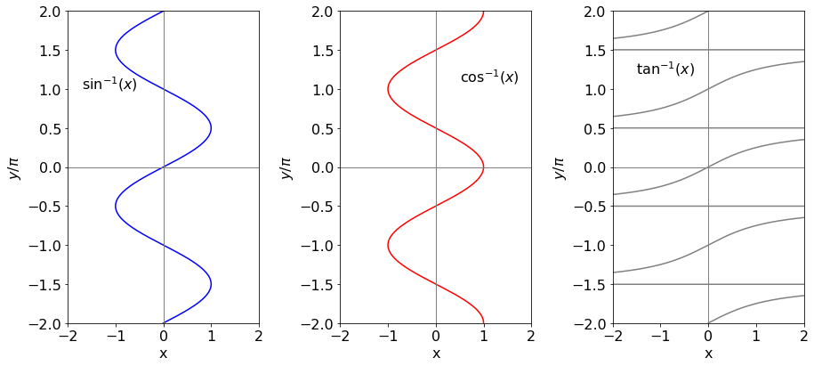
from scipy.special import gamma
def fact(n):
if n <= 1 :
return 1
f=1.0
for i in range(1,n+1):
f = f*i
return f
print(fact(15) )
plt.rcParams.update({'font.size': 20}) # set font size for plots
fig1=plt.figure(figsize=(13,6))
ax0 = fig1.add_subplot(1,2,1)
ax1 = fig1.add_subplot(1,2,2)
m = 20
x = np.zeros(m,dtype=int)
ff = np.zeros(m,dtype=int)
for i in range(m):
x[i]=i
ff[i]= np.log( fact(i) )
ax0.scatter(x,ff,s=50,color='red')
ax0.set_ylabel(r'$\ln(n!)$')
ax0.set_xlabel(r'$n$')
ax0.set_yticks([0,10,20,30,40])
ax0.set_xticks([0,5, 10,15, 20])
ax0.set_xlim([0,20])
xx = np.linspace(-4,m,5000)
ax1.plot(xx,gamma(xx),color='blue' )
for i in range(0,8):
ax1.scatter(i,fact(i-1),color='red',s=50, zorder=10 )
ax1.set_ylim([-10,30])
ax1.set_xlim([-4,6])
ax1.set_yticks([-10,0,10,20,30])
ax1.axhline(0,color='grey',linewidth=1)
ax1.set_xlabel(r'$x$')
plt.tight_layout()
#plt.savefig('chapter1-fig19.png')
plt.show()
1307674368000.0
def fact(n):
if n <= 1 :
return 1
f=1
for i in range(1,n+1):
f = f*i
return f
j = 2
for i in range(26):
if fact(i) > 10**j:
print('**',i,j, fact(i))
j=j+3
** 5 2 120
** 9 5 362880
** 12 8 479001600
** 15 11 1307674368000
** 17 14 355687428096000
** 19 17 121645100408832000
** 22 20 1124000727777607680000
** 24 23 620448401733239439360000
def afact(n):
if n <= 1 :
return 1
return n*afact(n-1)
print(afact(15))
1307674368000
#x=symbols('x')
#f=lambda x: exp(-x)-log(x)
#findroot(f,1)
1.3098
fig1=plt.figure(figsize=(13,6))
ax0 = fig1.add_subplot(2,3,1)
ax1 = fig1.add_subplot(2,3,2)
ax2 = fig1.add_subplot(2,3,3)
ax3 = fig1.add_subplot(2,3,4)
ax4 = fig1.add_subplot(2,3,5)
ax5 = fig1.add_subplot(2,3,6)
axx=['ax'+str(i) for i in range(6)]
x=np.linspace(-2*np.pi,2*np.pi,200)
f=lambda x: np.sin(x)
for i,ax in enumerate(axx):
print(i,np.sin(i))
qx = eval(ax)
qx.axhline(0,color='grey',linewidth=1)
qx.plot(x,np.sin((i-2)/2)*f(x),color='blue')
qx.set_ylim([-1.1,1.1])
qx.axis('off')
plt.show()
0 0.0
1 0.8414709848078965
2 0.9092974268256817
3 0.1411200080598672
4 -0.7568024953079282
5 -0.9589242746631385
# standing wave
fig1=plt.figure(figsize=(6,4))
x=np.linspace(-1*np.pi,1*np.pi,200)
f=lambda x: np.sin(x)
num = 4
cols = cm.brg_r( np.linspace(0, 1, num) )
for i in range(-num,num):
plt.plot(x/np.pi,(i+1)/num *f(x),color=cols[i])
plt.plot(x/np.pi,-f(x),color='black')
plt.axhline(0,color='grey',linewidth=1)
bbox_props = dict(boxstyle="rarrow,pad=0.5",fc='None', ec="b", lw=2)
plt.text(-0.5, 0.65, " ", ha="center", va="center", rotation=270,size=10,bbox=bbox_props)
plt.text(0.5, -0.65, " ", ha="center", va="center", rotation=-270,size=10,bbox=bbox_props)
#plt.ylim([-1.1,1.1])
plt.xlim([-1,1])
plt.yticks([-1,-0.5,0,0.5,1])
#plt.axis('off')
#plt.savefig('chapter1-fig13a.png')
plt.show()
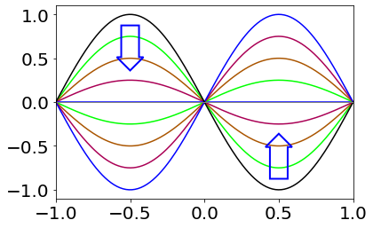
x, n = symbols('x,n') # hermite
def herm(n, x):
if n == 0:
return 1
elif n == 1:
return 2*x
else:
return 2*x*herm(n - 1, x) - 2*(n- 1)*herm(n - 2, x)
for i in range(6):
print(simplify( herm(i,x) ))
1
2*x
4*x**2 - 2
8*x**3 - 12*x
16*x**4 - 48*x**2 + 12
32*x**5 - 160*x**3 + 120*x
# Q13
x, n = symbols('x,n') # Legendre chnage n-> n-1
def Legen(n, x):
if n == 0:
return 1
elif n == 1:
return x
else:
return ( (2*(n-1)+1)*x*Legen(n - 1, x) - (n-1)*Legen(n - 2, x))/(n)
for i in range(6):
print(i,expand( Legen(i,x) ))
0 1
1 x
2 3*x**2/2 - 1/2
3 5*x**3/2 - 3*x/2
4 35*x**4/8 - 15*x**2/4 + 3/8
5 63*x**5/8 - 35*x**3/4 + 15*x/8
# Q13
x, n = symbols('x,n') # Legendre chnage n-> n-1
def Cheb(n, x):
if n == 0:
return 1
elif n == 1:
return x
else:
return 2*x*Cheb(n - 1, x) - Cheb(n - 2, x)
for i in range(6):
print(i,expand( Cheb(i,x) ))
0 1
1 x
2 2*x**2 - 1
3 4*x**3 - 3*x
4 8*x**4 - 8*x**2 + 1
5 16*x**5 - 20*x**3 + 5*x
def NA(days, num): # birthdays
p = 1.0
for i in range(num):
p = p*(days-i)
#print(p, days-i)
return p
fig1=plt.figure(figsize=(6,6))
plt.rcParams.update({'font.size': 16}) # set font size for plots
days = 365
num = 80
x = np.linspace(1,num,num)
p = np.zeros(num)
print(1-NA(days,num)/days**num )
for anum in range(1,num):
p[anum]=(1-NA(days,anum)/days**anum )
plt.scatter(x,p,color='blue',s=2)
plt.xlabel('number in group' )
plt.ylabel('probability')
plt.xlim([0,num])
plt.ylim([0,1])
plt.tight_layout()
#plt.savefig('chapter1-fig20a.png')
plt.show()
0.9999143319493135
def fact(n):
if n == 1 or n==0 :
return 1
else:
p = 1
for i in range(1,n):
p = p*(i+1)
return p
print(fact(365)/fact(340)/365**25)
0.43130029603053616
fig1=plt.figure(figsize=(6,6))
plt.rcParams.update({'font.size': 16}) # set font size for plots
Z = lambda E: 1+2*np.exp(-E) # butane
#x = [i for i in range(10)]
x=np.linspace(0,10,100)
#p = [1/Z(i) for i in range(10)]
#print(p)
plt.plot(x,1/Z(x),color='red')
plt.plot(x,1/Z(x)**10,color='blue')
plt.ylim([2e-5,2])
plt.xlim([0,10] )
plt.yscale('log')
plt.xlabel(r'$E_g/k_BT$')
plt.ylabel(r'$p(trans)$')
plt.tight_layout()
plt.annotate(r'$1/Z$',xy=(1,1))
plt.annotate(r'$1/Z^{10}$',xy=(2.5,0.1))
#plt.savefig('chapter1-fig23a.png')
plt.show()
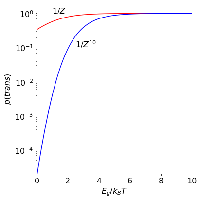
R,T,Z,Eg=symbols('R,T,Z,Eg')
Z = 1+2*exp(-Eg/(R*T)) # butane
S=R*ln(Z)+R*T*diff(ln(Z),T)
S
U=R*T**2*diff(log(Z),T)
U
#entropy .
fig1=plt.figure(figsize=(6,6))
plt.rcParams.update({'font.size': 16}) # set font size for plots
S = lambda E: np.log(1+2*np.exp(-E) ) + E* 2*np.exp(-E)/(1+2*np.exp(-E) ) # butane
#x = [i for i in range(10)]
x = np.linspace(0,10,100)
#p = [1/Z(i) for i in range(10)]
#print(p)
plt.plot(x,S(x),color='red')
plt.axhline(np.log(3))
#plt.ylim([2e-5,2])
#plt.xlim([0,10] )
#plt.yscale('log')
plt.xlabel(r'$E_g/k_BT$')
plt.ylabel(r'$S/R$')
plt.tight_layout()
#plt.annotate(r'$1/Z$',xy=(1,1))
#plt.annotate(r'$1/Z^{10}$',xy=(2.5,0.1))
#plt.savefig('chapter1-fig23a.png')
plt.show()
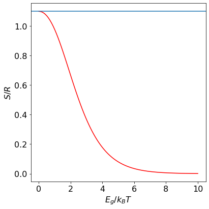
# Q14 square root
N = 23
k = 0
while k**2<= N:
k = k+1
k = k-1
print(k)
r = np.zeros(20,dtype=float)
r[0]=0
r[1]=1
for i in range(2,20):
r[i] = 2*k*r[i-1] + (N-k**2)*r[i-2]
print(i,r[i]/r[i-1]-k)
pass
print(np.sqrt(N))
4
2 4.0
3 4.875
4 4.788732394366198
5 4.7964743589743595
6 4.795773364911641
7 4.795836785418393
8 4.795831047206844
9 4.795831566389953
10 4.795831519415167
11 4.795831523665363
12 4.795831523280812
13 4.795831523315606
14 4.795831523312458
15 4.795831523312744
16 4.795831523312717
17 4.795831523312719
18 4.795831523312719
19 4.795831523312719
4.795831523312719
#Q15 (a) fibonacci
f = np.zeros(20,dtype=int)
f[0]=1
f[1]=1
for i in range(2,20):
f[i] = f[i-1] + f[i-2]
print('{:4d} {:8d} {:f}'.format( i, f[i], f[i]/f[i-1]) )
pass
print((1+np.sqrt(5))/2 )
2 2 2.000000
3 3 1.500000
4 5 1.666667
5 8 1.600000
6 13 1.625000
7 21 1.615385
8 34 1.619048
9 55 1.617647
10 89 1.618182
11 144 1.617978
12 233 1.618056
13 377 1.618026
14 610 1.618037
15 987 1.618033
16 1597 1.618034
17 2584 1.618034
18 4181 1.618034
19 6765 1.618034
1.618033988749895
#Q15
f = np.zeros(20,dtype=int)
f[0]=1
f[1]=1
for i in range(2,20):
f[i] = 2*f[i-1] + f[i-2]
print('{:d} {:10d} {:f}'.format( i, f[i], 1.0*f[i]/f[i-1]) )
pass
print(1+np.sqrt(2))
2 3 3.000000
3 7 2.333333
4 17 2.428571
5 41 2.411765
6 99 2.414634
7 239 2.414141
8 577 2.414226
9 1393 2.414211
10 3363 2.414214
11 8119 2.414213
12 19601 2.414214
13 47321 2.414214
14 114243 2.414214
15 275807 2.414214
16 665857 2.414214
17 1607521 2.414214
18 3880899 2.414214
19 9369319 2.414214
2.414213562373095
f = np.zeros(30,dtype=float)
f[0] = 1.0
f[1] = 1.0
for i in range(2,30):
f[i] = f[i-1]+2.0*f[i-2]
print(i,f[i], f[i]/f[i-1])
pass
2 3.0 3.0
3 5.0 1.6666666666666667
4 11.0 2.2
5 21.0 1.9090909090909092
6 43.0 2.0476190476190474
7 85.0 1.9767441860465116
8 171.0 2.011764705882353
9 341.0 1.9941520467836258
10 683.0 2.002932551319648
11 1365.0 1.9985358711566619
12 2731.0 2.0007326007326007
13 5461.0 1.9996338337605273
14 10923.0 2.000183116645303
15 21845.0 1.9999084500595075
16 43691.0 2.00004577706569
17 87381.0 1.999977111991028
18 174763.0 2.0000114441354526
19 349525.0 1.9999942779650155
20 699051.0 2.0000028610256777
21 1398101.0 1.9999985694892075
22 2796203.0 2.000000715255908
23 5592405.0 1.999999642372174
24 11184811.0 2.000000178813945
25 22369621.0 1.9999999105930355
26 44739243.0 2.0000000447034845
27 89478485.0 1.9999999776482584
28 178956971.0 2.000000011175871
29 357913941.0 1.9999999944120646
# Q 16 . binomial recursion
def binom(n):
b = 1
for q in range(n+1):
print(q,round(b))
b = b*(n-q)/(q+1)
pass
binom(12)
0 1
1 12
2 66
3 220
4 495
5 792
6 924
7 792
8 495
9 220
10 66
11 12
12 1
10-39 % 10

43 % 10
fig1=plt.figure(figsize=(10,2))
x=np.linspace(-6100,-6000,100)
plt.plot([-6100,-6000],[0.0,0.0])
plt.scatter([-6051.78],[0],color='red')
plt.scatter([-6050],[0],color='black')
plt.plot([-6020,-6080],[0.3,0.3],color='red',linewidth=3)
plt.ylim([-0.1,0.5])
plt.xlim([-6100,-6000])
plt.yticks([])
plt.xticks([-6100,-6080,-6050,-6020,-6000])
plt.tight_layout()
#plt.savefig('chapter1-fig26.png')
plt.show()
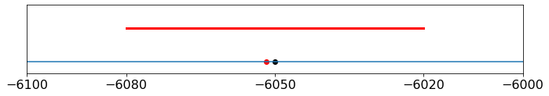
import scipy.constants
res = scipy.constants.physical_constants["Avogadro constant"]
print(res)
(6.02214076e+23, 'mol^-1', 0.0)
#scipy.constants.find()
x,D0,t = symbols('x D0 t',positive=True)
eqn= x**2*exp(-x**2/(4*D0*t))
ans = integrate(eqn, (x,-oo,oo))
simplify(ans)
expand( (1/(4*pi*D0*t)**(1/2))*4*sqrt(pi)*D0*t*sqrt(D0*t) )
def afact(n):
if n==0:
return 1
if n==1:
return 1
return n*afact(n-1)
n = 60 # number of trials 60 atoms
m = 0 # choose this number from n
q = 0.01109 # chance of m occuring in n atoms, i.e prob of 13C in sample of C.
P=lambda n,m,q : afact(n)/(afact(m)*afact(n-m))*q**m*(1-q)**(n-m)
for i in range(10):
print(i,P(n,i,q) )
0 0.512160538832117
1 0.34461338497829996
2 0.1140063220743806
3 0.024717836299455325
4 0.003950027267389017
5 0.0004961270356532496
6 5.100104920176416e-05
7 4.41214328690441e-06
8 3.278009955081611e-07
9 2.123957781683833e-08
from scipy.special import factorial
fig1=plt.figure(figsize=(6,6))
plt.rcParams.update({'font.size': 16}) # set font size for plots
# poisson k in number , mu= mean
pois = lambda k, mu : mu**k*np.exp(-mu)/ factorial(k)
k = np.linspace(0,20,200)
s = 0
for j in range(40):
s = s + j*pois(j,5)
print('mean',s)
cols=['blue','red','grey','green','black']
for i,mu in enumerate( [0.5,2,6,9,12]):
plt.plot(k,pois(k,mu),color=cols[i] )
if mu ==6:
for j in range(20):
plt.scatter(j,pois(j,mu),color='black',zorder=10,s=20)
plt.xlim([0,20])
plt.ylim([0,0.65])
plt.xlabel(r'$k$')
plt.ylabel(r'$P(k,\mu)$')
mm=[2,9]
for m0 in mm:
plt.plot([m0,m0],[0,pois(m0,m0)] ,color='black')
sig = 1.05*np.sqrt(m0)
plt.plot([m0,m0+sig],[pois(m0,m0)/2,pois(m0,m0)/2],'black' )
plt.text(2,0.3,r'$\mu=2 $')
plt.text(6,0.18,r'$\mu=6 $')
plt.text(9,0.15,r'$\mu=9 $')
plt.text(12,0.125,r'$\mu=12 $')
plt.text(10.5,0.042,r'$\sigma =3$',fontsize=12)
plt.tight_layout()
#plt.savefig('chapter1-fig20b.png')
plt.show()
mean 4.999999999999999
pois(0,2.93)
g,N,epsilon,k,T=symbols('g,N,epsilon,k,T')
Z = (1-(g**N*exp(-N*epsilon/(k*T))))/(1-g*exp(-epsilon/(k*T)))
avn = (1/epsilon)*simplify(( k*T**2*diff(Z,T)/Z))
avn
fig1=plt.figure(figsize=(6,5))
plt.rcParams.update({'font.size': 16}) # set font size for plots
avn = lambda x: n/(1-(np.exp(x)/g)**n) - 1/(1 - np.exp(x)/g) # x=E/kBT. blue
x = np.linspace(0,3,5000) # x = E/k_BT
g = 4.0
n = 200.0
plt.axvline(np.log(g),color='grey',linewidth=1)
plt.plot(x,avn(x),color='blue',linewidth=1)
#plt.plot(x,f012(x),color='green',linewidth=1)
plt.ylim([0,n*1.05])
plt.xlim([0,3])
plt.ylabel(r'$\langle n\rangle$')
plt.xlabel(r'$\epsilon/k_BT$')
plt.text(1.2*np.log(g),0.89*n,'g = '+str(g)+', n = '+str(n),fontsize=14)
plt.xticks([0,1,2,3])
plt.yticks([0,50,100,150,200])
plt.tight_layout()
#plt.savefig('series-fig2c.png')
plt.show()
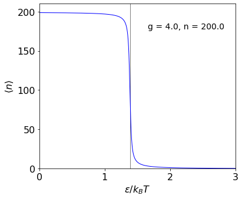
g,N,epsilon,k,T,x=symbols('g,N,epsilon,k,T,x')
Z = (1-(g**N*exp(-N*epsilon/(k*T))))/(1-g*exp(-epsilon/(k*T)))
U = simplify(( k*T**2*diff(Z,T)/Z))
U
ans0=collect(collect( factor(simplify(diff(U,T) ) ), exp(N*epsilon/(k*T) ) ),exp(epsilon/(k*T) ) )
ans0
ans=ans0.subs(epsilon/(T*k),x)
print(ans)
-epsilon*x*((-g*exp(2*N*x) - g**(2*N + 1))*exp(x) + (N**2*g**N*exp(2*x) + N**2*g**(N + 2) + (-2*N**2*g**(N + 1) + 2*g**(N + 1))*exp(x))*exp(N*x))/(T*(g - exp(x))**2*(-g**N + exp(N*x))**2)
cv=lambda x:-x**2*((-g*np.exp(2*N*x) - g**(2*N + 1))*np.exp(x) + (N**2*g**N*np.exp(2*x) + N**2*g**(N + 2) + (-2*N**2*g**(N + 1) + 2*g**(N + 1))*np.exp(x))*np.exp(N*x))/((g - np.exp(x))**2*(-g**N + np.exp(N*x))**2)
epsilon=1
N=100
g=4
x=np.linspace(0,3,200)
plt.axvline(np.log(g),color='grey',linewidth=1)
plt.plot(x,cv(x))
plt.show()
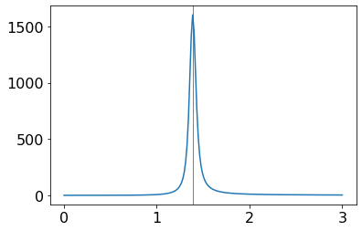
m0,p=symbols('m0,p')
factor(expand(m0*p*(1-p)**3 + m0*(1-p)**4 ) )
factor(expand( 3*m0*p**2*(1-p)**2+3*m0*p*(1-p)**3 ) )
factor(expand(3*m0*p**3*(1-p)+3*m0*p**2*(1-p)**2 ) )
factor(expand(m0*p**4+m0*p**3*(1-p) ) )

factor(expand(m0*p*(1-p)**2 + m0*(1-p)**3 ) )
factor(expand(2*m0*p**2*(1-p) + 2*m0*p*(1-p)**2 ) )
fig1=plt.figure(figsize=(6,5))
plt.rcParams.update({'font.size': 16}) # set font size for plots
def afact(n):
if n < 2:
return 1
else:
return n*afact(n-1)*1.0
def lnfact(n):
#return np.exp( n*np.log(n) - n + 0.5*np.log(2*np.pi*n)+1/(12*n) )
return np.exp( n*np.log(n) - n +(1/6)*np.log(8*n**3+4*n**2+n+1/30) + 0.5*np.log( np.pi ) )# Ramanujan
aprob = lambda n,p,N :p*(n*p)**( N-1 )*np.exp(-n*p)/afact( N-1 )
def prob(n,p,N): # do this way to reduce large numbers
w = p*np.exp(-n*p)
for i in range(N-1):
w = w*n*p/(N-1-i)
return w
p = 0.1
N = 200
num=8000
x = np.linspace(0,num,400)
plt.plot(x,prob(x, p, N),color='blue')
plt.plot(x,prob(x, p*1.2, N),color='grey')
plt.plot(x,prob(x, p, N*3),color='blue')
plt.plot(x,prob(x, p*1.2, N*3),color='grey')
plt.text( 2000,0.003,r'$N=200$')
plt.text( 5000,0.003,r'$N=600$')
#plt.text( 1650,0.003,r'$p=$'+str(2*p))
plt.xlim([0,num])
#plt.axvline((3*N-1)/p,color='grey', linestyle='dashed',linewidth=1)
plt.yticks([0,0.001,0.002,0.003,0.004])
plt.ylim([0,0.004])
maxn = (3*N-1)/p
#plt.plot([ maxn, maxn + np.sqrt(3*N)/p],[prob(maxn + np.sqrt(3*N)/p,p,3*N),prob(maxn + np.sqrt(3*N)/p,p,3*N)] )
#plt.ylim([0, 0.01])
plt.xlabel(r'$n$')
plt.ylabel(r'$P(n)$')
plt.tight_layout()
#plt.savefig('integration-fig17a.png')
plt.show()
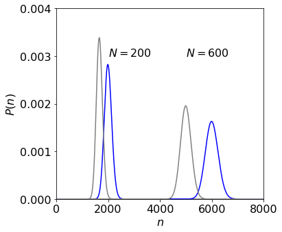
prob(N/p,p,N),N*p
aprob(N/p,p,N),N*p
---------------------------------------------------------------------------
OverflowError Traceback (most recent call last)
/var/folders/gn/whk4pp2x4kz_ftg0b1ycmh340000gn/T/ipykernel_11709/1307462478.py in <module>
----> 1 aprob(N/p,p,N),N*p
/var/folders/gn/whk4pp2x4kz_ftg0b1ycmh340000gn/T/ipykernel_11709/130631515.py in <lambda>(n, p, N)
13 return np.exp( n*np.log(n) - n +(1/6)*np.log(8*n**3+4*n**2+n+1/30) + 0.5*np.log( np.pi ) )# Ramanujan
14
---> 15 aprob = lambda n,p,N :p*(n*p)**( N-1 )*np.exp(-n*p)/afact( N-1 )
16
17 def prob(n,p,N): # do this way to reduce large numbers
OverflowError: (34, 'Result too large')
n,p,N=symbols('n,p,N')
f01= p*(n*p)**(N-1)*exp(-n*p)
simplify(diff(f01,n) )
{\displaystyle \ln n!\approx n\ln n-n+{\tfrac {1}{6}}\ln(8n^{3}+4n^{2}+n+{\tfrac {1}{30}})+{\tfrac {1}{2}}\ln \pi .}
n,k=symbols('n,k')
f01= (n**n*exp(n) )
f02=(k**k*exp(k) )
f03=( (n-k)**(n-k)*exp(n-k) )
ans=expand(f01/(f02*f03))
ans
figbin = plt.figure(figsize=(6,6) )
plt.rcParams.update({'font.size': 16}) # set font size for plot
x = np.linspace(0,1,200)
#abinom = lambda n,k: k**(-1.0*k)* n**(1.0*n) * (n-k)**(k-n) # not good large n
def abinom(n,k): # ok as integers not reals
s=1
for i in range(1,k+1,1):
s = s*(n+1-i)//i
return s
for n in [20,100,1000]:
binm = special.binom(n,n/2)
abin = special.binom(n,x*n)
plt.plot( x, abin/binm,color='blue',linewidth=1)
#plt.annotate(r'$1000$', xy=(x[105],abin[105]/binm), xytext=(0.75,0.5),
# arrowprops = dict(color='grey', shrink=0.01,width=1,headlength=15,headwidth=6) )
for n in[20]:
xx = np.linspace(0,1,n)
binm = special.binom(n,n/2)
abin = special.binom(n,xx*n)
plt.scatter(xx,abin/binm,color='grey',s=10)
plt.scatter(xx,abin/binm,s=50,facecolor='none',edgecolor='black',zorder=10,linewidth=1)
pbig=[]
xbig=[]
for i in range(4800,5200,10):
pbig.append((abinom(10000,i)/abinom(10000,10000//2) ))
xbig.append(i/10000)
#plt.scatter( i/10000,(abinom(10000,i)/abinom(10000,10000//2) ),s=2,color='black')
plt.plot(xbig,pbig,color='red',label=r'$n=10000$')
#plt.annotate(r'$10000$', xy=(xbig[30],pbig[30]), xytext=(0.75,0.25),
# arrowprops = dict(color='grey', shrink=0.01,width=1,headlength=15,headwidth=6) )
plt.plot([0.5,0.5],[-0.05,0.05], color='black')
plt.xlim([0,1])
plt.ylim([0,1])
plt.xlabel(r'$k/n$')
plt.ylabel(r'$p/p_{max}$')
plt.xticks([0,0.25,0.5,0.75,1])
plt.text(0.35,0.8,r'$n=20$',rotation =80)
plt.text(0.35,0.15,r'$100$',rotation=80)
plt.text(0.53,0.10,r'$1000$',rotation=-86)
#plt.legend()
plt.legend(fontsize=12)
plt.tight_layout()
#plt.savefig('chapter1-fig20b.png')
plt.show()
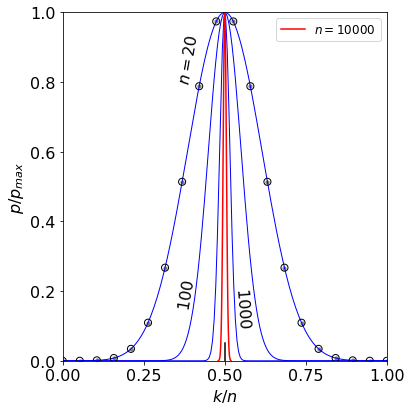
def abinom(n,k):
s=1
for i in range(1,k+1,1):
s = s*(n+1-i)//i
return s
print( (abinom(100000,50500)/abinom(100000,100000//2) ) )
0.0067377223967344455
special.binom(1000,1000//2)

(np.sum(pbig))/1000
n,z=symbols('z,n')
f01=z**z*exp(z)/(n**n*exp(n)*(z-n)**(z-n)*exp((z-n)))
simplify(f01 )
10**(24)*np.log10(0.99)
1e12*60*60*24*365